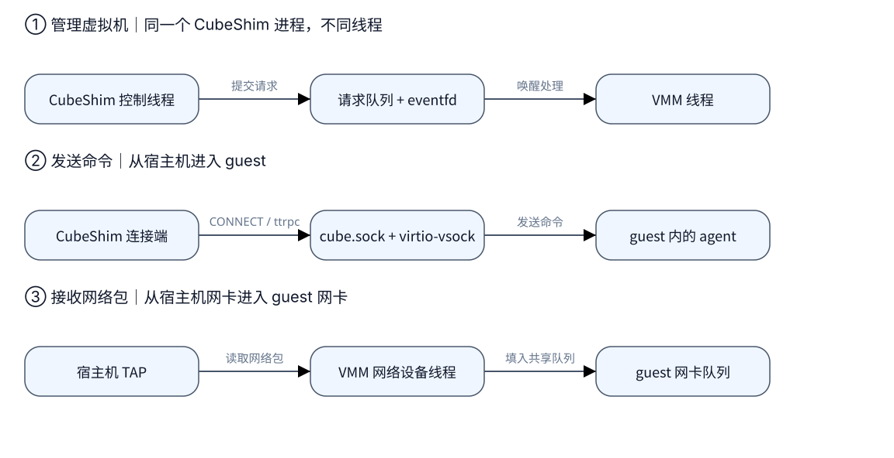

CubeShim 如何与 Hypervisor 配合：从启动沙箱到传递 I/O
启动一个沙箱时，CubeShim 既要让虚拟机运行起来，又要把命令送进虚拟机， 最后还要把命令输出带回来。它看起来一直在“通信”，但这几件事走的是不同路径。
先认识三个角色：CubeShim 是宿主机上的沙箱运行时；CubeHypervisor 是管理 虚拟机的程序，下面简称 VMM；guest agent 是虚拟机内部接收命令的服务。 在这里，VMM 作为库运行在 CubeShim 进程中，agent 则运行在 guest 内。 理解了这条边界，后面的 socket 就容易分清了。E1
本文以 v0.7.1 为准，介绍 ARM64 与 x86_64 共享的通信机制；结论来自源码， 未做运行或性能验证。
| 版本 | 固定源码 | 大致时间（commit） |
|---|---|---|
| v0.7.1 | 31d911e430fd | 2026-09 |
1. 启动虚拟机：先交请求，再唤醒 VMM
想象用户发出了“启动沙箱”的请求。CubeShim 先准备 CPU、内存、网卡等配置， 交给 VMM 保存，再请求启动。两者在同一个进程里，可以直接传递 Rust 请求对象， 不必先把请求编码成 HTTP 再送过 socket。
但它们运行在不同线程。CubeShim 把请求放进队列，再用 eventfd 唤醒 VMM。 可以把 eventfd 理解为门铃：它只提醒“有事要处理”，具体请求仍在队列里。 VMM 取出请求、执行操作，再通过响应队列返回结果。E1
下面的图把三个阶段拆开。先看第一行的进程内控制，再看第二行跨进虚拟机的 命令通信，最后看第三行真正搬运网络数据的路径。

图 1：第一行两端属于同一个 CubeShim 进程；第二、三行右端位于 guest。 图中箭头表示请求或接收数据的方向，响应反向返回；控制请求、agent 命令与网络包各有通道。证据：E1、E2、E3。
这也解释了一个常见误判：启动调用返回成功，只能证明 VMM 已处理这次请求。 虚拟机里面的服务是否能接收命令，还需要下一步确认。
2. 进入 guest：cube.sock 把连接送到 agent
普通启动时，CubeShim 会等待 guest 发出“agent 已开始监听”的通知，然后连接
宿主机上的 cube.sock。它先发送 CONNECT 1024，要求 VMM 把连接接到
guest 的 1024 端口；握手成功后，才通过 ttrpc 发送创建沙箱、执行命令等请求。
这里 ttrpc 是远程调用协议，virtio-vsock 则是连接宿主机与 guest 的虚拟通信设备。E2
所以，cube.sock 的另一端最初是 VMM 的转接器，而不是 guest 文件系统中的
同名 socket。转接器把 host 上的 Unix socket 字节流接入 guest 的 vsock 连接，
agent 才能收到命令。
项目还提供一个叫 chapi 的 Unix socket，接受 HTTP 控制请求。app snapshot
工具通过它暂停虚拟机、保存快照、再继续运行；CubeShim 的常规启动请求仍走
上一节的进程内队列。两个入口最终交给同一个 VMM 处理。E4
3. 命令有了输出：旧转发链与可选 passfd
命令在 guest 中运行，stdout/stderr 最后需要送回宿主机。传统路径由 agent 提供输出，再由 CubeShim 通过 ttrpc 读取并转发。于是，CubeShim 不仅负责 “请执行命令”，也参与搬运命令产生的数据。
v0.7.1 提供了可选的 passfd 路径：CubeShim 先把宿主机 stdio 的文件描述符 交给 VMM。文件描述符可以理解为一个已打开 I/O 端点的句柄；交付后，VMM 的 vsock 后端就可以直接读写这个端点。图中只画 stdout 输出方向。E5

图 2：变化发生在宿主机一侧，省去了 CubeShim 对输出数据的转发。guest agent 和 virtio-vsock 仍在路径中；这不是端到端零拷贝的承诺。证据：E5。
这条路径需要显式启用：cube.use_passfd_io annotation 的值为大小写不敏感的
true，stdout/stderr
路径非空，而且不能是 app snapshot 的构建场景。默认配置为关闭；本版本的
Cubelet 源码中未找到该开关的写入方。因此，读到 passfd 代码并不能判断部署
已经使用了它，也不能据此声称获得了多少性能收益。
4. 网络与磁盘：数据交给设备处理
如果 guest 程序发起网络访问，数据走的是另一条路：guest 网卡把包放进
virtqueue（guest 与 VMM 约定的共享内存队列），VMM 的网络线程取出包并写入
宿主机 TAP 虚拟网卡。接收方向反过来，从 TAP 读取包并填入 guest 的队列。
这条路径不会绕道 guest agent 的 cube.sock。E3
那么 TAP 从哪里来？CubeShim 在配置里提供 TAP 名称。单接收队列、名称与沙箱
标识齐备时，VMM 优先向 Cubelet 的网卡池索取已打开的 TAP fd；条件不满足或
索取失败时，才回退到自行打开或创建 TAP。网卡池用到第三个 socket：
cubetap.sock。它只负责
交付句柄；句柄到手后，网络线程直接操作 TAP，网络包不再经过这个交付 socket。
磁盘 I/O 也遵循类似分工：CubeShim 配置设备，VMM 的块设备线程消费 guest 请求并访问后端存储。文件共享可以使用进程内 virtio-fs 后端，也可以在明确配置 时使用外部后端。“配置设备”和“搬运数据”是不同阶段。E6
5. 恢复快照后，为什么还要重新连接
快照保存了 guest 的运行状态，但宿主机侧的 TAP、socket 和 stdio 连接仍需要 按这次沙箱重新绑定。恢复时，CubeShim 向 VMM 提供当前网络、存储和 vsock 配置，再重新建立到 agent 的连接。启用了 passfd 时，还需要重绑输出通道。E7
这里有一个影响排查顺序的例外：app snapshot 恢复成功后，会直接尝试连接 agent，
跳过普通启动中的 ready 通知等待。如果看到 CONNECT 握手读到 EOF，应先检查
guest/agent 与 vsock 连接；这条错误本身不能证明 TAP 网络出了故障。
普通 ready 等待有 10 秒上限，而进程内 VMM 请求的响应等待本身没有超时。E2
v0.5.1 到 v0.7.1 的主控制通道一直保持进程内通信，主要变化发生在 stdio 交付、 网络错误处理和暂停恢复的生命周期。接着阅读 通信与 I/O 版本演进，可以看到 新旧路径的对照，以及升级时需要注意的条件。
源码与进一步阅读
以下均为固定 v0.7.1 源码事实；性能收益、部署开关状态和跨版本快照兼容尚未验证。 详细历史证据保持在各版本研究记录中。需要定位实现时，可按 E1～E7 查阅。
- E1 · 进程内控制：launch_vmm 创建 VmmInstance；send_request 完成队列发送、eventfd 唤醒与阻塞等待；VMM thread 初始化请求与响应通道。
- E2 · guest 连接与 ready：connect_agent 发送 CONNECT；start_vm 区分普通启动与 app restore；SysCtrl 发送 ready 通知；agent 启动顺序 先启动服务再发通知。
- E3 · TAP 与网络数据：open_tap 选择 pool/slow path；lookup_from_pool 获取 donated fd；NetEpollHandler 与 queue_pair 搬运网络包。
- E4 · HTTP 旁路：chapi 配置；Snapshot::request_ch 经 Unix socket 发送 HTTP 请求。
- E5 · passfd：启用条件；sendmsg 交付 fd；PassFdStream；guest I/O 转发。零拷贝与性能收益不在已证事实之内。
- E6 · 存储设备：Block::activate；外部文件系统后端；native 文件系统后端。